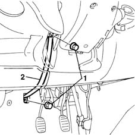
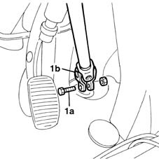
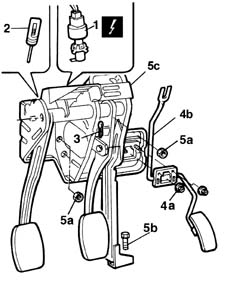
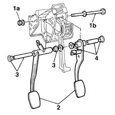

3330B14 pedal unit - overhaul
- Path
- Procedures > 33 BRAKING SYSTEM > 3330 HYDRAULIC BRAKING SYSTEM > 3330B pedal unit > 3330B14 pedal unit - overhaul
- Kind
- repair procedure (removal / refitting; the operation number is the code)
- Applies to
- all engines; all production periods
- Interactive page
- https://sloeber94.github.io/elrnDB-fMltpl/en/#/2891608
Applies to: all engines; all production periods
 Removing
Removing
 Refitting
RefittingDisconnect the battery negative terminal.
 | Name | Connector |
|---|---|---|
- | Battery |
1. Undo the fixing nuts.
2. Remove the reaction bracket.

Applies to: all engines; all production periods
1. Undo the bolt (1a) and disconnect the two steering control joints (1b).

Applies to: all engines; all production periods
1. Disconnect the electrical connection from the switch on the brake pedal.
| Name | Connector |
|---|---|---|
1 | Brake pedal switch |
2. Disconnect the clutch release cable from the pedals.
3. Remove the fixing spring (3a) and separate the rod for the brake servo (3b) from the brake pedal.
4. Undo the nuts (4a) and separate the accelerator pedal (4b) from the pedals.
5. Undo the nuts (5a) and the bolt (5b) fixing the reaction bracket and remove the pedals (5c).

Applies to: all engines; all production periods
Place the pedals on a suitable workbench.
1. Undo the fixing nut (1a) and remove the pin (1b), recovering any washers.
2. Remove the brake and clutch pedals from the mounting bracket.
3. Remove the bushes from the brake pedal.
4. Remove the bushes from the clutch pedal.

Applies to: all engines; all production periods
Lubricate the bushes and then fit them on the appropriate pedals.
Position the pedals, fit the fixing bolt and lock the nut.
Tighten the bolt fixing the pedals assembly.
Applies to: all engines; all production periods
Refitting
RemovingPosition the pedals assembly in the special housing.
Tighten the nuts fixing the pedals assembly to the bodyshell.
 | Fastening | Component | Ø | Value (daNm) |
|---|---|---|---|---|
- | Nut | PEDAL MOUNT | M8 | 2.2 |
Tighten the bolt fixing the reaction bracket to the floor to torque.
| Fastening | Component | Ø | Value (daNm) |
|---|---|---|---|---|
- | Bolt | PEDAL MOUNT | M8 | 1.5 |
Position the accelerator pedal and secure it with the fixing nuts.
Positin the brake servo rod on the brake pedal and connect the fixing spring.
Connect the clutch release cable to the pedals assembly.
Connect the electrical connection to the switch on the brake pedal.
| Name | Connector |
|---|---|---|
- | Brake pedal switch |
Tighten the bolt fixing the two seering joints to torque.
| Fastening | Component | Ø | Value (daNm) |
|---|---|---|---|---|
- | Bolt | STEERING SHAFT JOINT FASTENERS | M8 | 2.5 |
Position the reaction bracket.
Tighten the nuts fixing the bracket.
Connect the battery negative terminal.
| Name | Connector |
|---|---|---|
- | Battery |